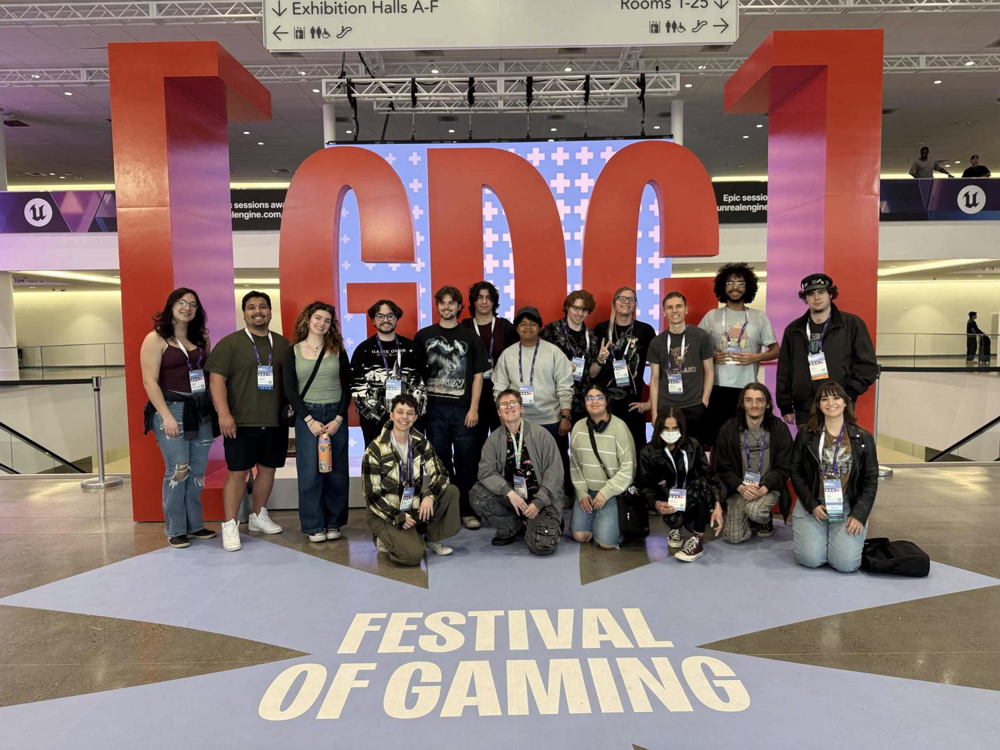
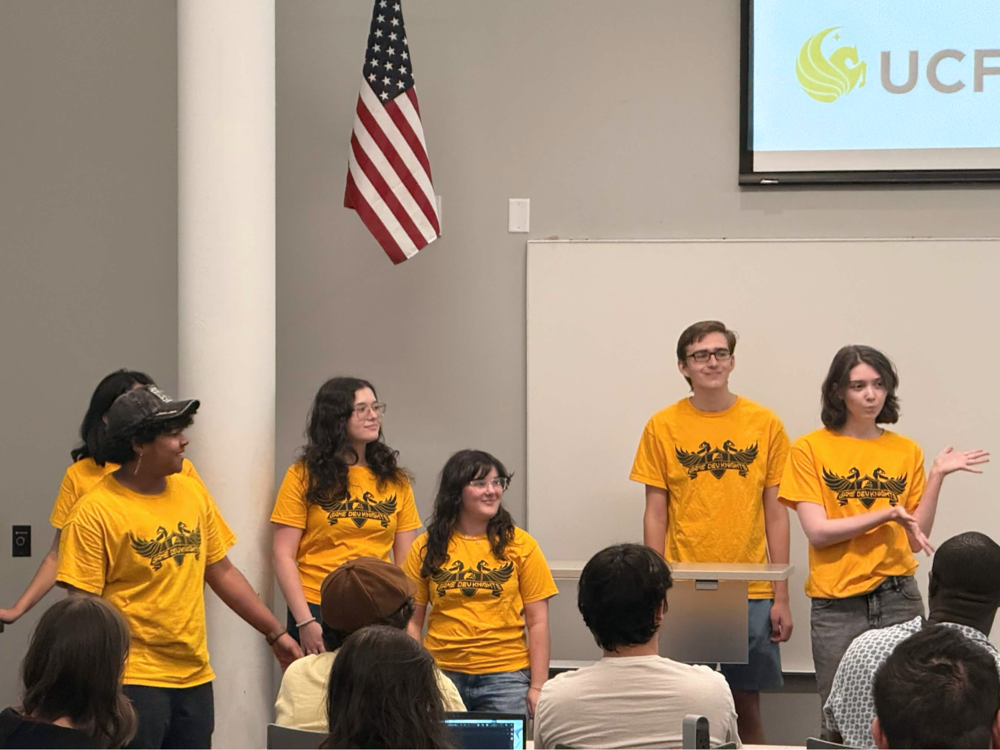
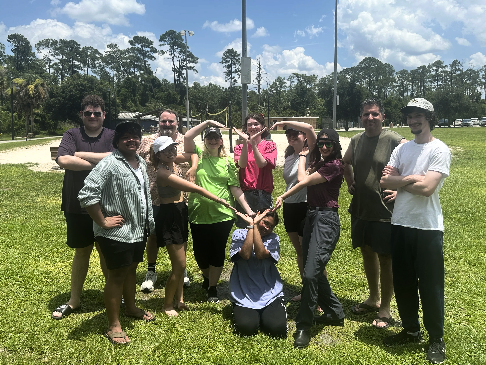

About Me
I've been actively developing games since 2024, specializing in building shaders and pipeline tools that aid artists and optimize performance. Along the way, I’ve had the privilege of learning directly from industry leaders, including spending a year studying under Technical Art Director Filipe Strazzeri.
I am a senior in Computer Science at UCF, with a focus on computer graphics and rendering techniques. Currently, I work as a Technical Art intern at Limbitless Solutions where I design VFX, tools, and gameplay systems.

President, Game Dev Knights at UCF (May 2026 - Present)
As President of Game Dev Knights (GDK)—UCF's official game development organization—I've learned that leadership is about being adaptable and empowering those around you. In my current role, I focus heavily on expanding opportunities for our members.
Some of my proudest initiatives include:
- Hosting an hour-long industry panel with 7 industry professionals and ~100 attendees
- Hosting two game jams with ~40 participants each and 20 total game submissions
- Directed our industry mentorship program, connecting 35 students with 14 industry professionals and alumni from a variety of fields
- Coordinated a 4-part introductory workshop series, bringing in alumni to teach fundamental skills such as programming, 3d art, level design, and version control.
- Launched a project program, organizing 86 participants into 16 teams to gain experience developing semester-long game projects together.
- Planning and coordinating a 20-person trip to GDC, securing funding and handling logistics.


